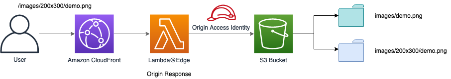
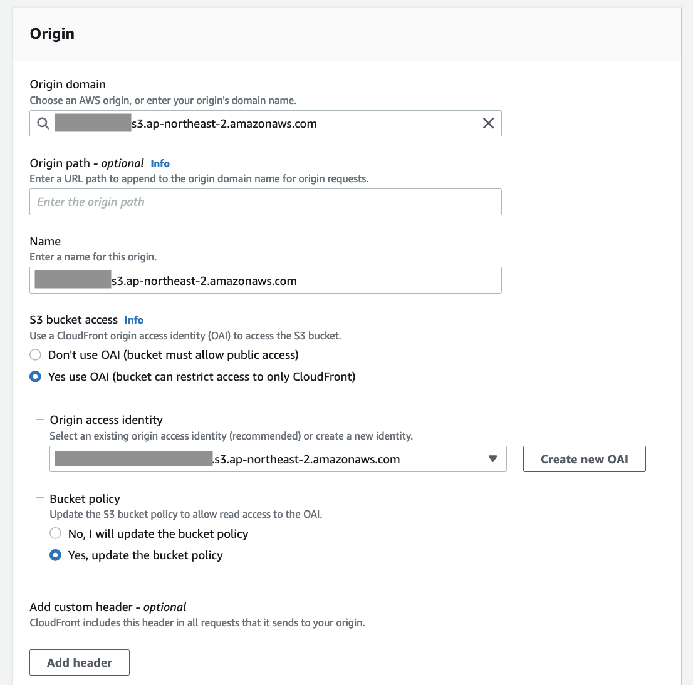
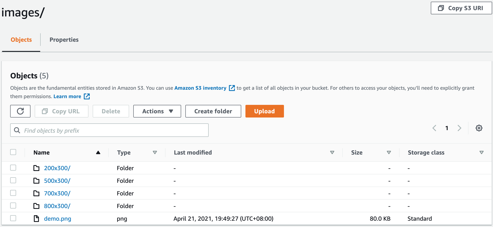

图片缩放
什么是图片缩放?
本方案可在CloudFront边缘节点上对您的图片进行缩放。当您有大量图片需要转换成各种尺寸的图片，如缩略图、适配手机的图片、适配PC浏览器的图等，可通过此功能减少操作成本。
图片缩放是如何工作的?

-
用户在URL中指定需要缩放的尺寸，例如：https://www.example.com/images/200x300/demo.png，即表示将demo.png转换为200x300的图片。
-
如果此尺寸的图片已在S3桶中存在，则直接返回它。
-
如果此尺寸的图片不在S3桶中，Lambda会收到404 Not Found响应，Lambda会获取S3桶中的原始图片（例如：images/demo.png），按照URL中指定的尺寸对其进行缩放，并把缩放后的图片存储到S3桶的相应文件夹中（例如：images/200x300）。 注意：若没有返回404 Not Found，而是返回403，您需要在S3桶中添加s3:ListBucket权限，例如：
-
当图片缩放并存储到S3桶后，Lambda会返回200状态码，并将缩放后的图片的返回。
-
缩放后的图片会缓存在CloudFront中，当用户下次请求同样尺寸的图片时，会优先从缓存中获取图片，从而减少响应时间。
使用说明
请执行如下步骤
-
登录您的AWS账号，并进入S3控制台。
-
创建一个S3桶，并在桶中创建一个文件夹，例如名称为images的文件夹，将您的原始图片上传到此文件夹中。

-
进入CloudFront控制台，点击创建分配按钮。
-
在创建分配页面，源域：选择在第2步中创建的S3桶；S3存储桶访问：选择'是的，使用 OAI' 并点击 '创建新的OAI' 按钮创建一个OAI。存储桶策略：选择 '是，更新存储桶策略'。其他用默认选项，点击创建分配按钮。 
-
等待直到CloudFront分配创建完成。
-
进入S3控制台。选择第二步创建的S3桶。
-
在权限标签页中，更新存储桶策略中的Action和Resource值。(更新Action为s3:ListBucket，更新Resource为S3桶的ARN，具体参考如下示例)。
{ "Version": "2008-10-17", "Id": "PolicyForCloudFrontPrivateContent", "Statement": [ { "Sid": "1", "Effect": "Allow", "Principal": { "AWS": "arn:aws:iam::cloudfront:user/CloudFront Origin Access Identity E2NHBYQWR0YVVH" }, "Action": "s3:ListBucket", "Resource": "arn:aws:s3:::input-your-bucket-name" } ] } -
部署CloudFront Extensions控制台。在扩展存储库中，选择image-resize。
-
点击部署按钮。
下表是参数具体定义：
参数 描述 FitType 图片缩放方式，有效值为cover：保留纵横比，通过裁剪以确保图像覆盖提供的两个尺寸。contain：保留纵横比，在必要时使用“letterboxing”。fill：忽略输入的纵横比并拉伸到两个提供的尺寸。inside：保持纵横比，将图像调整为尽可能大，同时确保其尺寸小于或等于指定的尺寸。outside：保留纵横比，将图像调整为尽可能小，同时确保其尺寸大于或等于指定的尺寸。 S3BucketName 包含图片的S3桶名称，例如：resize-image-demo -
等待直到部署完成，您将会看到如下资源。

- 点击表格中的ResizeLambdaEdgeFunction。
-
点击'部署到Lambda@Edge'按钮。

-
选择之前创建的CloudFront分配。CloudFront事件选择源响应，点击部署按钮。

-
等待直到Lambda@Edge部署完成。
-
要使用图片缩放功能，在您的浏览器中输入URL(例如：https://CloudFrontUrl/images/200x300/demo.png)，它将会自动生成一个200x300的demo.png图片，并将其保存到S3桶的images/200x300文件夹.
在本示例中，原始图片为images文件夹中的demo.png，自动生成的图片会被保存在images文件夹中的相应尺寸的文件夹中

CloudFront阶段
源响应阶段
通过Web控制台部署（推荐）
从Web控制台中部署扩展的步骤类似。有关更多信息，请参阅True Client IP.